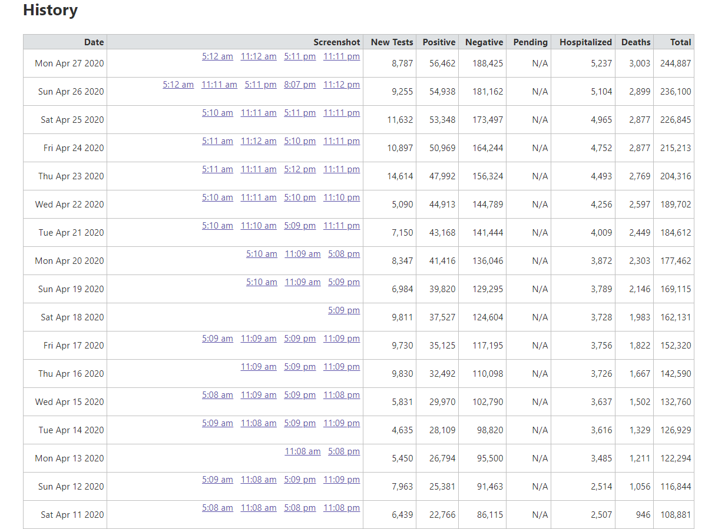
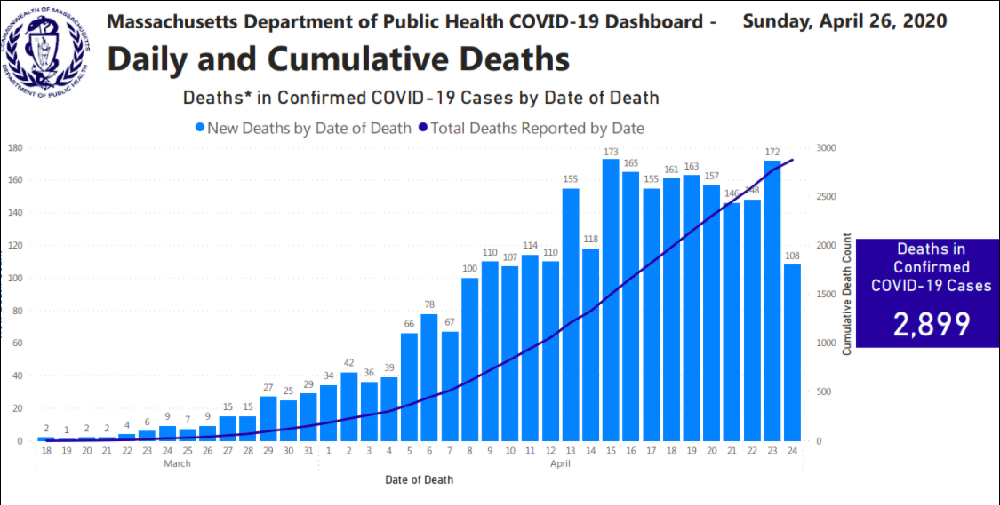

Massachusetts Historical Deaths seem to have changed
Issue number 312
nshpritz opened this issue on April 27, 2020 at 1:05 pm
The number of deaths due to coronavirus disease seemed low to me over the weekend and so I went back to some historical data and it seems as if there has been a complete restatement of deaths by date in MA. I doubt this was intentional.
For example, the MA history shows that MA suffered its 1000th death on April 12 yet this report from the local NPR affiliate, and a number of other sources, cites April 15. https://www.wbur.org/commonhealth/2020/04/15/coronavirus-1000-deaths-massachusetts
On that date, the COVID Tracking States Daily report shows MA went over 1500 deaths. This constrasts with the unbelievably (unfortunately) small 22 deaths over the entire weekend.
The historical Daily tracking reports used to match much more closely to figures reported in the press. Finally, here are a few days as they were posted on Friday on GitHub. The Wednesday number of total deaths from last Friday’s data shows 2,182 (see below). That number currently on GitHub is now 2,597.
From Friday, April 24.
| date | state | positive | positiveIncrease | totalTestResultsIncrease | death | deathIncrease | positiveRate |
|---|---|---|---|---|---|---|---|
| 20200424 | MA | 46,023 | - | - | 2,360 | - | |
| 20200423 | MA | 46,023 | 3,079 | 14,614 | 2,360 | 178 | 21.1% |
| 20200422 | MA | 42,944 | 1,745 | 5,090 | 2,182 | 221 | 34.3% |
| 20200421 | MA | 41,199 | 3,122 | 13,131 | 1,961 | 255 | 23.8% |
| 20200420 | MA | 38,077 | - | - | 1,706 | - | |
| 20200419 | MA | 38,077 | 1,705 | 5,435 | 1,706 | 146 | 31.4% |
| 20200418 | MA | 36,372 | 1,970 | 8,062 | 1,560 | 156 | 24.4% |
| 20200417 | MA | 34,402 | 2,221 | 7,971 | 1,404 | 159 | 27.9% |
| 20200416 | MA | 32,181 | 2,263 | 8,750 | 1,245 | 137 | 25.9% |
| 20200415 | MA | 29,918 | 1,755 | 5,472 | 1,108 | 151 | 32.1% |
| 20200414 | MA | 28,163 | 1,296 | 4,502 | 957 | 113 | 28.8% |
| 20200413 | MA | 26,867 | 1,392 | 5,319 | 844 | 88 | 26.2% |
| 20200412 | MA | 25,475 | 2,615 | 7,954 | 756 | 70 | 32.9% |
Current Deaths on April 27
| Date | Screenshot | New Tests | Positive | Negative | Pending | Hospitalized | Deaths | Total |
|---|---|---|---|---|---|---|---|---|
| Sun Apr 26 2020 | 5:12 am11:11 am5:11 pm8:07 pm11:12 pm | 10,845 | 54,938 | 236,100 | N/A | 5,104 | 2,899 | 291,038 |
| Sat Apr 25 2020 | 5:10 am11:11 am5:11 pm11:11 pm | 14,011 | 53,348 | 226,845 | N/A | 4,965 | 2,877 | 280,193 |
| Fri Apr 24 2020 | 5:11 am11:12 am5:10 pm11:11 pm | 13,874 | 50,969 | 215,213 | N/A | 4,752 | 2,877 | 266,182 |
| Thu Apr 23 2020 | 5:11 am11:11 am5:12 pm11:11 pm | 17,693 | 47,992 | 204,316 | N/A | 4,493 | 2,769 | 252,308 |
| Wed Apr 22 2020 | 5:10 am11:11 am5:10 pm11:10 pm | 6,835 | 44,913 | 189,702 | N/A | 4,256 | 2,597 | 234,615 |
Thank you for this Project and for fixing the MA testing data. However, there is still a problem in the daily history for both positive tests and deaths. Here is what is currently currently on the MA Daily page:

And this is what was pulled down on Friday:
| date | state | positive | positiveIncrease | totalTestResultsIncrease | death | deathIncrease | positiveRate |
|---|---|---|---|---|---|---|---|
| 20200424 | MA | 46,023 | - | - | 2,360 | - | |
| 20200423 | MA | 46,023 | 3,079 | 14,614 | 2,360 | 178 | 21.1% |
| 20200422 | MA | 42,944 | 1,745 | 5,090 | 2,182 | 221 | 34.3% |
| 20200421 | MA | 41,199 | 3,122 | 13,131 | 1,961 | 255 | 23.8% |
| 20200420 | MA | 38,077 | - | - | 1,706 | - | |
| 20200419 | MA | 38,077 | 1,705 | 5,435 | 1,706 | 146 | 31.4% |
| 20200418 | MA | 36,372 | 1,970 | 8,062 | 1,560 | 156 | 24.4% |
| 20200417 | MA | 34,402 | 2,221 | 7,971 | 1,404 | 159 | 27.9% |
| 20200416 | MA | 32,181 | 2,263 | 8,750 | 1,245 | 137 | 25.9% |
| 20200415 | MA | 29,918 | 1,755 | 5,472 | 1,108 | 151 | 32.1% |
| 20200414 | MA | 28,163 | 1,296 | 4,502 | 957 | 113 | 28.8% |
| 20200413 | MA | 26,867 | 1,392 | 5,319 | 844 | 88 | 26.2% |
| 20200412 | MA | 25,475 | 2,615 | 7,954 | 756 | 70 | 32.9% |
| 20200411 | MA | 22,860 | 1,886 | 6,404 | 686 | 87 | 29.5% |
| 20200410 | MA | 20,974 | 2,033 | 7,414 | 599 | 96 | 27.4% |
| 20200409 | MA | 18,941 | 2,151 | 7,447 | 503 | 70 | 28.9% |
| 20200408 | MA | 16,790 | 1,588 | 6,167 | 433 | 77 | 25.7% |
| 20200407 | MA | 15,202 | 1,365 | 4,915 | 356 | 96 | 27.8% |
| 20200406 | MA | 13,837 | 1,337 | 4,492 | 260 | 29 | 29.8% |
| 20200405 | MA | 12,500 | 764 | 3,137 | 231 | 15 | 24.4% |
| 20200404 | MA | 11,736 | 1,334 | 5,838 | 216 | 24 | 22.9% |
The positive tests may be a timing difference within a day, maybe - a couple look a little large for that. But the historical deaths really do look off quite a bit. Just looking at 4/18 in the two exhibits, we currently see 1,983 deaths where on Friday the dataset showed 1,560. As I indicated in my comment above, I was able to pull out contemporaneous reporting that showed that MA surpassed 1,000 COVID-19 deaths on Wednesday, April 15. The current data shows that this threshold was passed on Sunday, April 12.
Thank you again for all the work you are doing. Cleaning datasets from multiple sources is very hard work and is why we usually pay good money to do this - there is a great deal of value that we, as a society, get from your work. Thank you.
This issue has been automatically marked as stale because it has not had recent activity. It will be closed if no further activity occurs. Thank you for your contributions!
Thanks @nshpritz ! The data that you pulled on Friday 4/24 were the states’ reported numbers at that point. On 4/27 we caught an error in the state data. The numbers that MA had previously been reporting for the daily and cumulative deaths did not match up with a bar chart that they published on 4/26. So we went back and revised our daily death and cumulative death numbers to match their chart. 
It seems as tho the total tested got swapped for the total negative - based on my extensive examination of 1 datapoint. The sheet in question is: https://docs.google.com/spreadsheets/u/2/d/e/2PACX-1vRwAqp96T9sYYq2-i7Tj0pvTf6XVHjDSMIKBdZHXiCGGdNC0ypEU9NbngS8mxea55JuCFuua1MUeOj5/pubhtml#
On 4/25 originally reported 173,497 negatives - I know this because I’ve been copying it daily.
Now, the same sheet shows negatives for 4/25 as 226,845.
Coincidently, the MA dashboard for 4/25 shows total test as 226,845 https://www.mass.gov/doc/covid-19-dashboard-april-25-2020/download
Today 20200427 is correct at 188,425, but yesterday is stated as 236,100.
Thank you for this project!!!